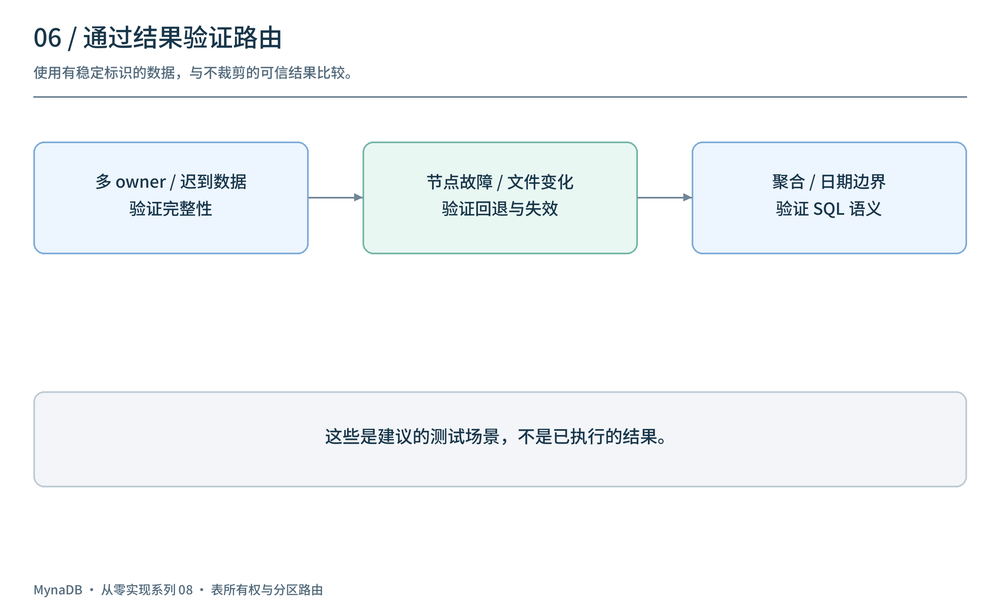

上一篇讨论了节点恢复和缩容。接下来要解决一个更细的问题：当同一张表的数据分散在多个节点、多个日期和许多 Parquet 文件中，一次写入或查询应该找谁？
这一篇以 v0.7.0 / M8 为线索，说明表级所有权、Hive 风格的物理路径、分区发现和缓存亲和。它们属于不同层次，不能把物理路径里的节点名直接当作当前唯一写入所有者。
1. 表所有权与物理分区是两本不同的账
Meta 中的表元数据描述一张逻辑表与其 owner 节点的关系；物理存储中的路径则描述数据文件按日期和写入节点组织的位置。

逻辑表：demo.default.cpu
Meta： 表 → owner 列表及其状态 / TTL
存储： demo/default/cpu/date=2026-02-01/node_id=data-1/...
v0.7.0 使用表级所有权作为 Meta 中的主要模型。一个表可以有多个 owner，例如写入重路由或数据分布后；查询需要覆盖所有相关数据，不能只看第一个 owner。物理分区路由用于发现和分配读取任务，不是把旧的分区副本注册模型重新作为权威元数据。
路径中的 node_id 是物理分区标识，并不保证该节点当前在线或仍为该表的主写入 owner。
2. 写入归属：owner 会变化
Router 收到写入后，需要根据表信息选择目标 Data 节点。当首选节点不可用或发生写入重路由时，同一张表的数据可能分布在不同节点。

历史版本的表 owner 记录包含过期时间及活动信息；相关路径还涉及 owner 清理、写入重路由和由 Meta leader 负责的表再平衡。TTL 有助于清理不再刷新的记录，但TTL 不是对所有写入路径的独占 fencing 保证。写入权限、故障判断和过期路由处理仍需分别验证。
多 owner 也带来查询问题：如果只访问当前首选节点，可能漏掉其他节点内存或文件中的数据。相反，重复访问同一份数据也可能重复计数。
3. Hive 风格路径能帮助什么？
该阶段使用类似下面的物理布局：
catalog/schema/table/
date=2026-02-01/
node_id=data-1/part-a.parquet
node_id=data-2/part-b.parquet
date=2026-02-02/
node_id=data-1/part-c.parquet

查询带有可提取的日期条件时，可以先限制需要发现的日期前缀，再检查对应的 node_id=... 子路径。这样做为缩小候选文件范围和利用节点本地缓存提供了机会，但收益取决于实际数据分布、查询和实现；不能把代码注释里的预期比例当成已验证性能。
这种路径与更早的 node-first 布局不同。升级前应盘点实际对象路径与读写兼容性，制定迁移和回滚方案；不能假定跨阶段自动迁移。
4. 热数据和冷文件：发现路径为何不同？
最近写入可能仍在 owner 节点的内存中，持久化文件则可以通过存储前缀发现。查询路由要同时考虑两者，而不是只列举 Parquet 文件。

v0.7.0 的路由代码包含表 owner、冷分区缓存与对象存储列举等路径，并根据时间范围和缓存结果选择候选节点。日期推导失败时需要有保守的回退方式；节点失联时，持久化分区可以尝试分配给其他可访问共享存储的节点。
一个容易忽略的情况是迟到数据或跨午夜数据：现在是 2 月 2 日，并不意味着 2 月 1 日的数据已经全部 flush。历史代码对“是否为近期查询”使用时间阈值等启发式；不能把注释中的理想行为当成对任意历史日期新写入的覆盖保证。应特别测试旧日期写入仍在内存时，查询是否能找到其 owner。
5. 分区分配与缓存亲和
发现候选物理分区后，Router 可以优先让对应节点读取自己的分区，争取复用其本地缓存；节点不可用时，再选择其他可用节点读取共享存储中的文件。

这里至少有三个不同的概念：
- 分区标识：文件路径中的
node_id。 - 执行节点：这次查询实际发送到的 Data 节点。
- 表 owner：Meta 为表维护的节点关系。
它们有时相同，但不能永久等同。回退时执行节点可能不同于分区标识；SQL 重写或扫描约束必须保留原分区范围，避免重复读取其他分区。
多个节点执行的结果还要正确汇总；如果读取的文件可能被 compaction、保留策略或迁移改变，缓存发现结果的失效、刷新和并发读取语义也需要验证。仅根据“Parquet 文件写出后不修改”并不能推断文件集合永远不变。
6. 用查询结果而不是路由日志验证

| 场景 | 建议核对 |
|---|---|
| 一张表有多个 owner | 内存和文件中的目标数据是否完整、无重复 |
| 查询跨多个日期 | 日期过滤、边界和时区是否符合语义 |
| 旧日期有迟到写入 | 尚未 flush 的数据是否能被正确发现 |
| 原节点不可用 | 共享存储回退读取的范围和结果是否正确 |
| 分区缓存过期或文件集合变化 | compaction、删除和新增后结果是否更新 |
| 查询不带日期或日期无法提取 | 是否保守回退，避免遗漏数据 |
| SQL 包含聚合、join 或 limit | 分区过滤和全局结果是否与基准结果一致 |
建议使用可识别的数据集，与不做路由裁剪的可信结果逐行比较，覆盖边界时间和故障注入。上述是测试建议，不是本文已执行的多节点验证。
7. 回看这一阶段
M8 将 Meta 里的权威路由模型转向表级所有权，并引入按 date 和 node_id 组织的物理分区与读取路由。前者回答表与节点的关系，后者帮助定位和分配文件读取；两者共同服务查询，但不能互相替代。
这一阶段还出现了早期集群管理界面。下一篇将继续看运维控制台、协议接入与时序分析能力如何扩展。
项目源码：panbooks/mynadb · v0.7.0 源码 · 中文文档。